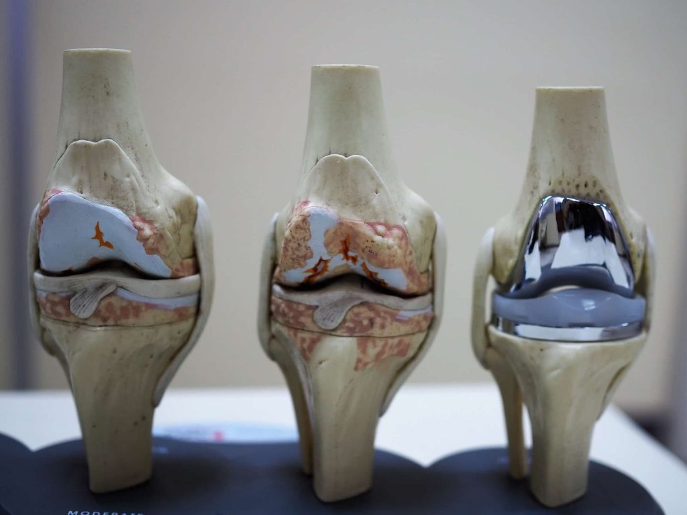
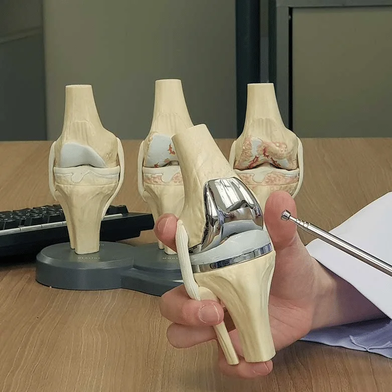

Las artroplastias de rodilla pueden ser totales (se sustituye la totalidad de las superficies articulares) o parciales (sólo se sustituye la zona más dañada). En términos generales, ambas están formadas por dos componentes metálicos separados entre sí por un polietileno de ultra-alta densidad, que permite su articulación sin contacto directo entre ambos, asegurando el movimiento natural de la rodilla.
Los componentes metálicos se fijan al hueso del paciente mediante cemento acrílico especial —para los huesos más osteoporóticos— o directamente sobre el hueso en los pacientes más jóvenes, usando componentes con recubrimientos especiales que favorecen su crecimiento en el interior, de manera similar a los implantes dentales de hoy en día.
En los días previos a la cirugía programada, se brinda al paciente una valoración e indicaciones preoperatorias claras sobre el procedimiento, así como la información necesaria para resolver dudas y disminuir la ansiedad ante la intervención.
El acompañamiento continúa con indicaciones precisas para el manejo del dolor, cuidado de la herida y un plan de rehabilitación progresivo, con el objetivo de que el paciente recupere movilidad y fuerza de forma segura y en el menor tiempo posible.


Prótesis unicompartimental de rodilla: En el caso de tener un único compartimento afectado por artrosis, podemos implantar una prótesis unicompartimental de rodilla. Más del 70% se realizan en el compartimento interno. Los nuevos implantes han mejorado los resultados y la tendencia actual es a incrementar su uso.
Prótesis total de rodilla: Si tenemos dos o los tres compartimentos afectados por artrosis, la solución es la prótesis total de rodilla. Es un procedimiento realizado desde hace décadas con muy buenos resultados. Hay varios tipos, y según las características del paciente y de la rodilla se elegirá con conservación o sustitución del ligamento cruzado posterior, cementadas o sin cementar, con vástagos tibiales.